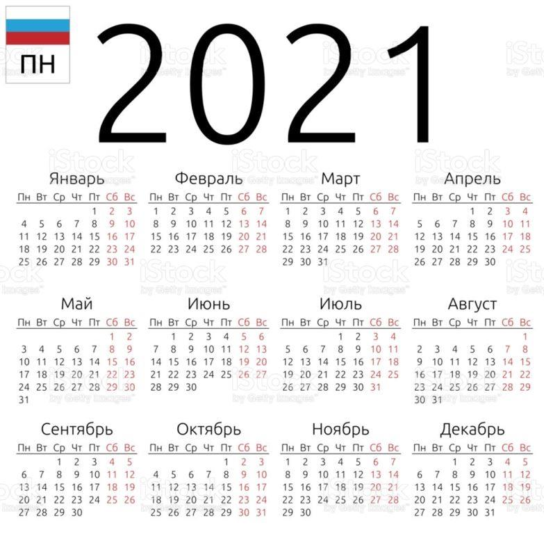

Здра́вствуйте, дороги́е друзья́ ! (Bonjour, chers amis !) Скажи́те мне, пожа́луйста, како́й сего́дня день неде́ли. (Dites-moi s’il vous plaît quel jour nous sommes aujourd’hui.) Понеде́льник, вто́рник, среда́, четве́рг, пя́тница, суббо́та и́ли воскресе́нье ? (Lundi, mardi, mercredi, jeudi, vendredi, samedi ou dimanche ?)
А како́й сейча́с ме́сяц ? (Et quel mois sommes-nous ?) Янва́рь, февра́ль, март, апре́ль, май, ию́нь, ию́ль, а́вгуст, сентя́брь, октя́брь, ноя́брь и́ли дека́брь ? (Janvier, février, mars, avril, mai, juin, juillet, août, septembre, octobre, novembre ou décembre ?) А како́е сего́дня число́? (Et quelle date sommes-nous aujourd’hui ?) Pour répondre à cette question, il faut connaitre les nombres ordinaux russes qui peuvent être masculins, féminins et neutres. Regardez le tableau.
Янва́рь – пе́рвый ме́сяц в году́ (Janvier est le premier mois dans l’année), февра́ль – второ́й ме́сяц, март – тре́тий ме́сяц. Апре́ль -... Продо́лжите са́ми ! (Continuez par vous-mêmes !) Тепе́рь дни неде́ли (Maintenant les jours de la semaine) : понеде́льник – пе́рвый день неде́ли, вто́рник - … Продо́лжите са́ми ! (Continuez par vous-mêmes !)
Imaginez que vous avez fait 40 erreurs en faisant un exercice en russe. Comptez-les de la manière suivante : Э́то моя́ пе́рвая оши́бка, (C’est ma première erreur), э́то моя́ втора́я оши́бка, э́то моя́ тре́тья оши́бка... Продо́лжите са́ми ! (Continuez par vous-mêmes !)
Maintenant revenons à notre question « Како́е сего́дня число́ ? » (Quelle date sommes-nous aujourd’hui ?) Pour donner la date, nous allons utiliser les nombres de genre neutre, car le mot число́ (date) est de genre neutre en russe. Voici quelques exemples de comment vous pouvez répondre à la question « Како́е сего́дня число́ ? »
Сего́дня пе́рвое января́. (Aujourd’hui nous sommes le premier janvier.)
Сего́дня второ́е февраля́. (Aujourd’hui nous sommes le deux février.)
Сего́дня тре́тье ма́рта. (Aujourd’hui nous sommes le trois mars.)
Сего́дня четвёртое апре́ля. (Aujourd’hui nous sommes le quatre avril.)
Сего́дня пя́тое ма́я. (Aujourd’hui nous sommes le cinq mai.)
Сего́дня шесто́е ию́ня. (Aujourd’hui nous sommes le six juin.)
Сего́дня седьмо́е ию́ля. (Aujourd’hui nous sommes le sept juillet.)
Сего́дня восьмо́е а́вгуста. (Aujourd’hui nous sommes le huit août.)
Сего́дня девя́тое сентября́. (Aujourd’hui nous sommes le neuf septembre.)
Сего́дня деся́тое октября́. (Aujourd’hui nous sommes le dix octobre.)
Сего́дня два́дцать пя́тое ноября́. (Aujourd’hui nous sommes le vingt-cinq novembre.)
Сего́дня три́дцать пе́рвое декабря́. (Aujourd’hui nous sommes le trente-et-un décembre.)
Attention : quand vous donnez la date en russe, les terminaisons des noms des mois changent. Янва́рь devient января́, февра́ль devient февраля́, март devient ма́рта etc. En voici la raison : dans la langue russe contemporaine on dit « Сего́дня пе́рвое января́ » (Aujourd’hui nous sommes le premier janvier), mais à l’époque on disait « Сего́дня пе́рвое число́ января́ » (Aujourd’hui nous sommes le premier jour de janvier). Ainsi, dans la phrase « Сего́дня пе́рвое января́ » le nombre ordinal пе́рвое est coordonné avec le mot число́ qui est sous-entendu, tandis que le mot января se traduit comme « de janvier » grâce à sa terminaison.
À la fin de cette leçon, je vous propose une blague russe (ру́сский анекдо́т).
Ма́ма говори́т до́чке (Maman dit à sa fille):
- Покажи́ ба́бушке, как ты вы́учила назва́ния ме́сяцев (Montre à mamie comment tu as appris les noms des mois). Ну, дава́й!.. (Vas-y !) Ян...?
- ...варь !
- Фев...?
- ...раль !
- Ма...?
- ...рт !
- Тепе́рь сама́ ! (Maintenant toute seule !)
- Рель, й, юнь, юль, густ, брь, брь, брь, брь !
Écoutez le podcast de cette leçon, retrouvez les corrigés des exercices et entraînez-vous en chantant et en faisant des jeux et exercices interactifs sur notre site le-russe.fr dans la rubrique « Cours de russe / Méthode ». До свида́ния ! Ю́лия. (Au revoir ! Julia.)
Partager cette page